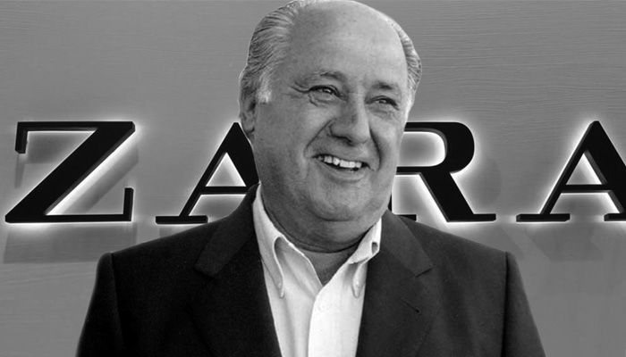
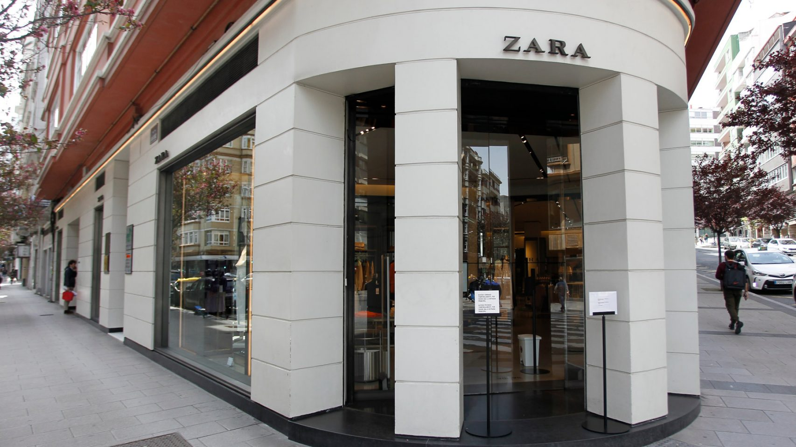

|

Amancio Ortega Gaona, 1936
|
En 1985, Industria de Diseño Textil S. A., Inditex, fue creada como una empresa holding para Zara y sus plantas de fabricación. En 1984 se inauguró el primer centro de distribución logístico. En los años siguientes se produce la salida fuera de las fronteras españolas abriendo tiendas en Oporto (1988), Nueva York (1989) y París (1990). En 1991, Inditex creó la compañía Pull & Bear y adquirió parte de Massimo Dutti (1991). La expansión del grupo Inditex continuó con Bershka (1998) y Stradivarius (1999). 2001 se convierte en un año importante para el grupo y con la salida a bolsa del Grupo Inditex el 23 de mayo por un valor total de un billón de pesetas.Inditex ha multiplicado por más de cinco su capitalización bursátil, ya que debutó en el mercado a 18,25 euros, y apenas dos meses después, en julio, el grupo se incorporaba al selectivo español. En el mismo año, la empresa lanzó una tienda de ropa interior femenina llamada Oysho. En 2003, fue abierta Zara Home y en el segundo semestre del año 2008, Uterqüe fue la última cadena de tiendas exclusivas abierta por el grupo.En 2005, el actual Presidente Ejecutivo Pablo Isla era consejero delegado de Inditex. Fue en 2011 cuando Ortega, fundador y principal accionista, renunció al cargo de presidente y el jefe ejecutivo Pablo Isla pasó a ser presidente de la compañía.15 En 2015, las aperturas netas de la compañía se situaron en 330, alcanzando al cierre del ejercicio un total de 7420 tiendas en 88 mercados. El 30 de noviembre de 2021, el Grupo Inditex anunció que su Consejo de Administración había nombrado a Marta Ortega Pérez como la nueva presidente de Inditex en sustitución de Pablo Isla, haciéndose efectivo el relevo a partir del 1 de abril de 2022. Primera tienda de Zara, en la Avenida de Arteixo |